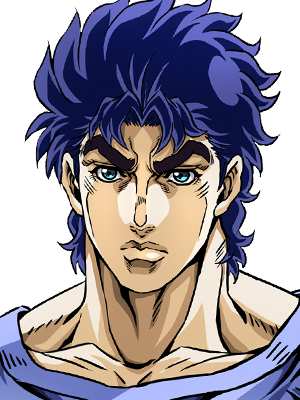
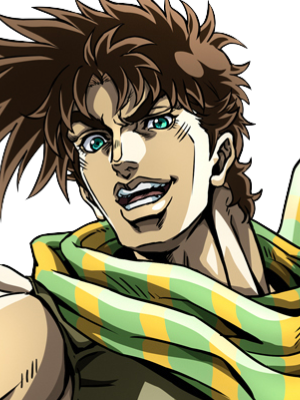
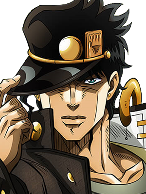
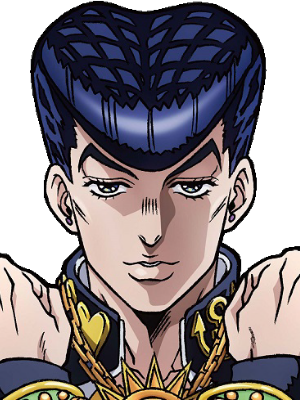
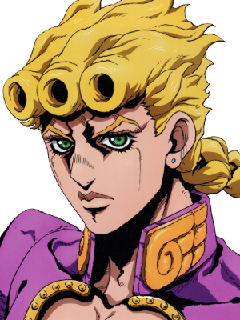
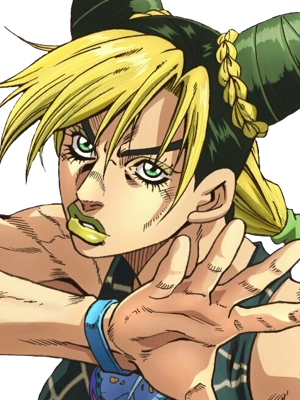
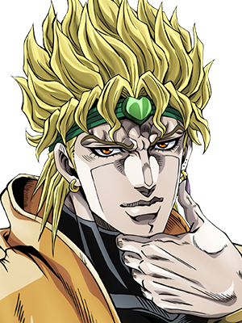

O protagonista da Parte 1, Phantom Blood. Ele é um jovem nobre inglês que enfrenta seu irmão adotivo, Dio Brando, que se torna um vampiro.
Neto de Jonathan, ele quebra a regra de cavalheirismo da família. É famoso por sua personalidade sarcástica, táticas imprevisíveis e por adivinhar a próxima frase dos inimigos.


Um estudante rebelde de poucas palavras, mas com um senso de justiça implacável. Ele lidera a jornada até o Egito com seu Stand invencível, o Star Platinum.
Um jovem carismático que odeia que falem mal do seu cabelo estilo pompadour. Seu Stand tem o poder único de restaurar e curar objetos e pessoas feridas.


Filho biológico de Dio Brando, herdou o sangue dos Joestar. Ele entra para a máfia italiana com o objetivo de proteger os inocentes e acabar com o tráfico de drogas.
Filha de Jotaro Kujo e a primeira protagonista feminina da franquia. Presa injustamente, ela manifesta o poder de transformar seu próprio corpo em fios para escapar e lutar.


O maior inimigo da linhagem Joestar. Rejeitou sua humanidade usando a máscara de pedra e busca o domínio absoluto do mundo através do seu Stand de controle temporal, o The World.